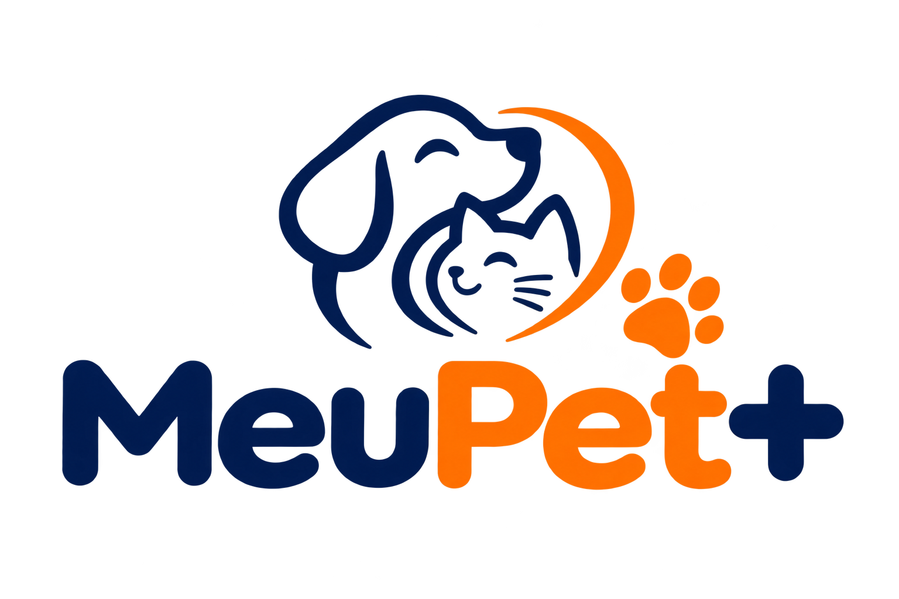

Amor, cuidado e carinho em cada patinha.
Tela rápida de carregamento: verifica se há sessão salva. Com sessão vai para a Home; sem sessão, para o Login.
POST /auth/login. Erro aparece abaixo do botão, sem mexer no layout. Vai para a Home. Usa o usuário de teste do mock.
GET /pets. O chip mostra qual pet precisa de atenção. Toque no card abre o Resumo do pet; "+" abre o cadastro de pet.
Mesmos três estados para Vacinas, Consultas e Peso: carregando (skeleton), vazio (convite para agir) e erro (o que houve e como resolver).
GET /pets/:id e resumos. Responde: a vacina está em dia? Quando foi a última consulta? Como está o peso? As abas levam às listas.
GET /pets/:id/vaccines. Ordenada pela próxima data. O status (em dia, vence em breve, vencida) é calculado no app. "+" abre o formulário de vacina.
GET /pets/:id/consultations. Lista por data, da mais recente para a mais antiga. "+" abre o formulário de consulta (mesmo padrão do de vacina).
GET /pets/:id/weights. Gráfico de linha com datas e kg, mais a variação entre o primeiro e o último registro. "+" abre o formulário de peso.
POST /pets/:id/vaccines. Valida no app e mostra o erro 422 da API no campo. Ao salvar, volta para a aba Vacinas. Consulta e peso seguem o mesmo padrão.
POST /pets. Aberto pelo "+" da Home. Ao salvar, volta para a lista com o novo pet.
GET /me. "Sair" chama POST /auth/logout, limpa a sessão e volta ao Login. Lembretes e tema são ajustes locais do app.